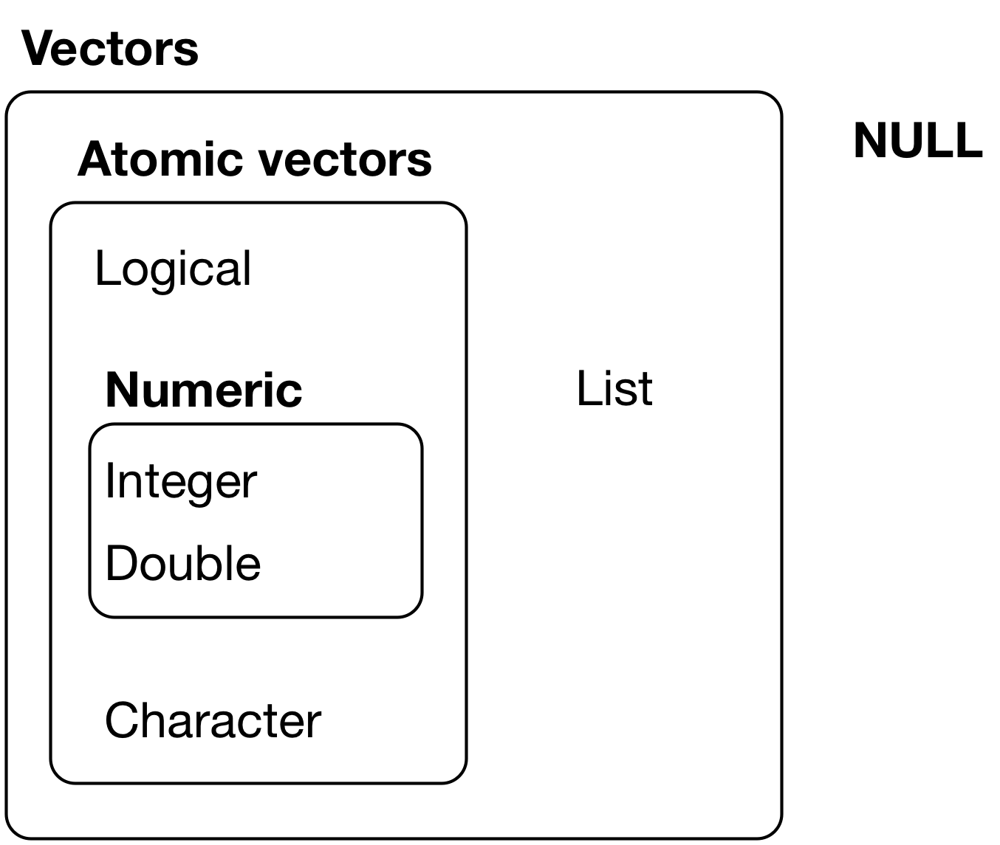

14.1 Vectors and Lists
[ keeps structure. [[ extracts one. A data frame is a list of columns.
1. Two kinds of vectors
R has two kinds of vectors: atomic vectors and lists.

An atomic vector holds one type: logical, integer, double, character (plus complex and raw, which we will not use). A list can hold mixed types, including other lists.
x <- c(1L, 10L, 2L)
typeof(x)
length(x)
c(1, 10, 2) is double. The L makes an integer. typeof() is the storage type. length() is how many elements.
A factor is an integer with labels. A Date is a double. Both still behave like atomic vectors when you subset them.
2. [ keeps structure; [[ extracts one
[ returns the same kind of object, names included. [[ pulls out one element and drops the wrapper. $ is [[ for a name.
x <- c(horse = 7, man = 1, dog = 8)
x[2:3]
x[c("man", "horse")]
x[-3]
x[[3]]
x[3] is still a named vector of length 1. x[[3]] is the number 8.
A logical vector of the same length picks the TRUE positions:
x[c(TRUE, FALSE, TRUE)]
3. Recycling and names
R recycles a shorter vector to the length of the longer one:
x <- c(1, 2, 3, 4)
x + 10
# same idea as x + c(10, 10, 10, 10)
Recycling a non-scalar (x + c(10, 20)) is legal and easy to misread. Prefer a scalar, or write a vector of the same length.
names(x) is a character vector. You can set names when you create the object:
c(Yoshi = 10L, Mario = 31L)
4. Lists hold mixed types
my_list <- list(
x = "a",
y = 1,
z = c(1L, 2L, 3L)
)
[ on a list returns a list. [[ or $ returns the element inside.
my_list[1]
my_list[[1]]
my_list$y
Remove an element by assigning NULL:
my_list$x <- NULL
5. A data frame is a list of columns
A tibble is a list. Each element is a column. That is why df[[2]] is the second column and df$species is the species column.
A list can also hold a tibble as one of its elements. Subset the list to get the tibble; then use dplyr on that tibble.
6. Practice
- Create
x <- c(
Yoshi = 10L,
Mario = 31L,
Luigi = 72L,
Peach = 11L,
Toad = 38L
)
Extract Yoshi and Peach four ways: positive integers, negative integers, a logical vector, and names.
- Build a wedding-style list: a
venue, aguesttibble (name, meal, age), abride, agroom, and adate. Remove one guest row from the embedded tibble. Add a named vector that decodes the meal codes. Extract the venue two ways.